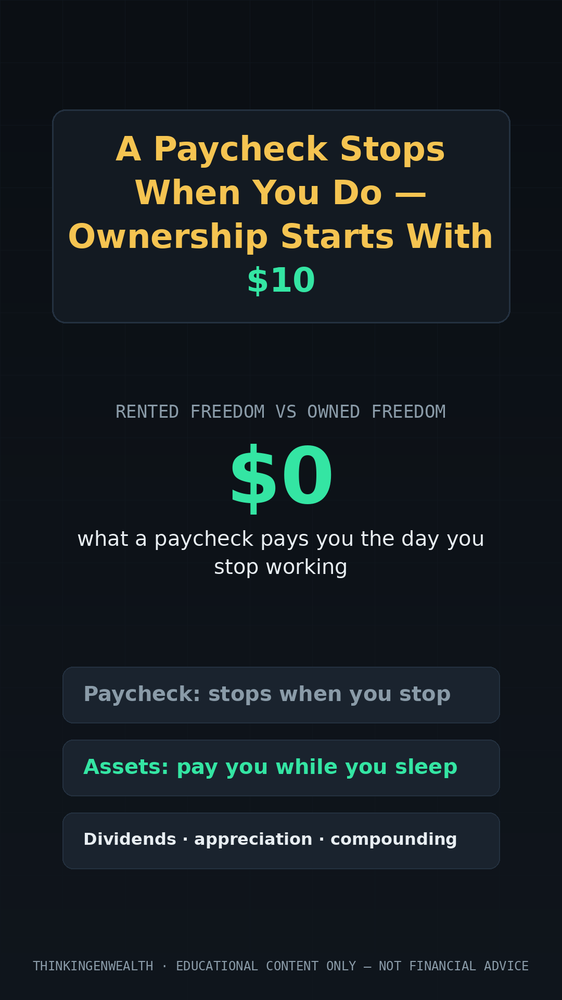
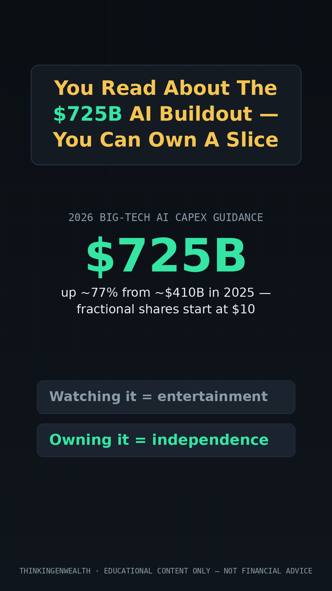
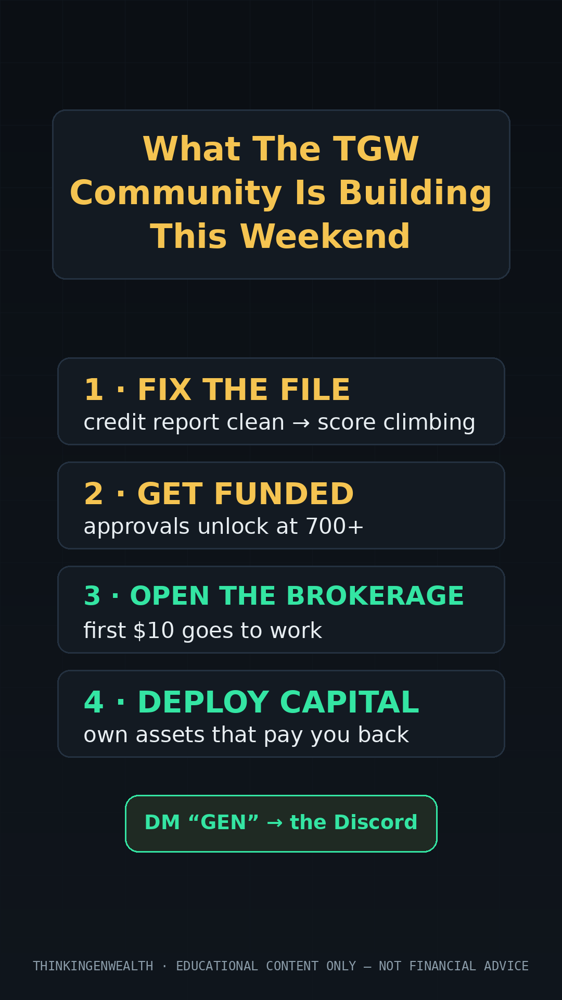

THINKINGENWEALTH · GENTHINKERS
The AI-selloff flagship + a trading-evergreen co-ep were filmed Sun Jun 28. This week is the rollout + the jobs-day spike.
Riverside clips → the TikTok ladder, the YouTube long-form + 3 Shorts, IG Reels, 3 Community posts.
AI flagship Mon, jobs reach-spike Thu, credit + mindset over the holiday weekend, trading ep banked for Sun.
The big story in our lane: the AI trade did a round-trip. Nasdaq fell 2.2% Jun 24 as Wall Street dumped the Mag 7 over the ~$725B of 2026 AI capex guidance (up ~77% from ~$410B in 2025) — then today (Jun 29) the dip got bought right back: Nasdaq +2.07%, Dow a record 52,183, S&P +1.18%, with Alphabet +4% (and joining the Dow). Also today: SCOTUS kept Fed gov. Lisa Cook (5-4), affirming Fed independence. Mid-week marquee: June jobs report drops Thu Jul 2, 8:30am ET (moved up — July 4 is Saturday, so the market is closed Fri Jul 3); prior print +172K / 4.3% / +3.4% wages. Backdrop: Fed dot median 3.8% — a hike still likelier than a cut. Sources: yahoo finance · thestreet · cnbc · bls.gov · federalreserve.gov
A clean round-trip: last week Wall Street demanded the AI payoff and sold the Mag 7 (Nasdaq −2.2% Jun 24); today the dip got bought right back — Nasdaq +2.07%, Dow to a record 52,183, Alphabet +4% (and it joined the Dow). The lane that just hit 21.8K on IG ("Buy the dip?"). The point isn't "AI's dead" or "AI's back" — it's how fast sentiment re-rates the same names spending ~$725B on AI. Screen-share: ai-selloff-dashboard.html (round-trip + earnings deep-dive).
Search-durable chart education — the 95K–125K vein (candlesticks, option chain). No news decay, so it's this week's bank: clip it Wednesday, drop the full long-form as next Sunday's flagship.
Last week they sold the AI trade; today they bought the dip right back and the Dow hit a record. The round-trip is the story. Screen-shares: ai-selloff-dashboard.html (round-trip view) · jobs-report-dashboard.html (week-ahead segment). Figures as of the Jun 29 close — verify before recording.
🎬 Teleprompter-ready rail script for Riverside: scripts/podcast-teleprompter.md — glanceable beats that keep you on path; only the hook, the stats, and the CTA are marked to read verbatim. Paste into Riverside (plain text, big font, manual scroll). The rundown below is the planning view.
Every day crosses our 3 data streams: a proven pillar (what actually wins), a timely peg (what's happening now), and the audience it's aimed at (who's watching + where). Because TikTok skews 25–34 and YouTube skews 35–54, the same anchor gets angled by age per platform — one recording, two cuts.
scripts/tuesday-ai-vs-dotcom.md
01 · Independence
02 · Paycheck vs own
03 · The Discord CLIPMotionNone needed — Jun 29–Jul 5 ran a full slate (AI-selloff flagship + collab + chart evergreen + jobs spike + credit + July-4 mindset). The bank stands ready for lighter weeks; the engine pulls TIER 1 first and logs the rotation. Full file ships with the site: TGW Evergreen Reel Bank.md.
Top posts pull people in with markets, credit, and "how I did X." The Discord pitch is investing. Connect them: "Fix your credit → get approved for funding → open a brokerage → then put that capital to work." One ladder, not two products.